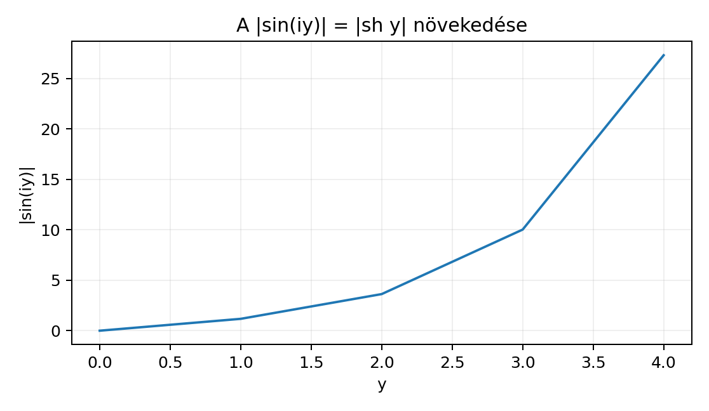

30.4 Komplex trigonometrikus és
hiperbolikus függvények
30.4.1 Motiváció
A valós
és
függvényeket az egységkör geometriájából ismerjük: értékeik mindig a
intervallumban vannak, periódusuk
,
és a
azonosság teljesül. A komplex számok világában azonban a trigonometrikus
függvények viselkedése meglepően gazdagabb. A
egyenletnek a valós számok körében nincs megoldása, de a komplex síkon
van: hamarosan kiszámoljuk, hogyan lehet
a szinusz értéke.
A kulcs az, hogy a komplex exponenciális függvény
már definiált, és belőle a trigonometrikus, valamint a hiperbolikus
függvények természetes módon kiterjeszthetők a komplex síkra. Ez a
kiterjesztés megőrzi a valós azonosságokat, de új jelenségeket is hoz:
például a komplex szinusz nem korlátos. A távvezetékek nagyfrekvenciás
viselkedésének leírásában éppen ez a komplex hiperbolikus és
trigonometrikus függvényekkel való számolás az egyik alapvető
eszköz.
30.4.2 Szemléletes kép
A képzetes tengely mentén a
függvény értéke drámaian nő. Legyen
,
ahol
valós. Ekkor — amint látni fogjuk —
,
tehát
,
ami
-nal
exponenciálisan nő. Az alábbi ábra ezt a növekedést szemlélteti:

A |sin(iy)| = |sh y| növekedése - A |sh
y| = (e^y - e^{-y})/2 értékei, 4 tizedesre kerekítve; a szinusz a
képzetes tengely mentén nem korlátos.
Míg a valós
grafikonja hullámzik
és
között, a komplex
a képzetes irányban hiperbolikus módon „elszáll”. Ez a kapcsolat a
trigonometrikus és a hiperbolikus függvények között a komplex analízis
egyik legszebb jelensége.
30.4.3 A komplex trigonometrikus és
hiperbolikus függvények definíciója
A valós
-re
érvényes Euler-formula szerint
.
Ebből a valós szinusz és koszinusz kifejezhető exponenciálisokkal:
Hasonlóan a valós hiperbolikus
függvények:
Ezeknek a képleteknek a jobb oldala
minden komplex
-re
értelmes, hiszen a komplex exponenciális és a komplex műveletek már
definiáltak. Így természetes a következő definíció.
Definíció. Minden
-re
legyen
Valós
esetén ezek visszaadják a megszokott valós függvényeket, tehát a komplex
kiterjesztés konzisztens a valós definícióval.
30.4.4 Kapcsolat a trigonometrikus
és hiperbolikus függvények között
A definícióból közvetlenül adódnak az alábbi, gyakran használt
összefüggések.
Állítás. Minden
-re
Bizonyítás. A definíciót használjuk. Először
mert
.
Hasonlóan
A másik két képlet ugyanezzel a
gondolattal igazolható, vagy egyszerűen a most bizonyított első két
azonosságban
helyére
-t
írva, felhasználva
:
és hasonlóan
a második azonosságból. ∎
A fenti kapcsolatokból az is kiolvasható, hogy a komplex síkon a
trigonometrikus függvények és a hiperbolikus függvények lényegében
ugyanannak a függvénycsaládnak az elforgatottjai. Konkrétan
képzetes irányban való elmozdulása a trigonometrikus függvényeknél
hiperbolikus növekedést okoz.
30.4.5 Azonosságok öröklődése
A komplex trigonometrikus függvényekre az összes megszokott valós
azonosság érvényes marad. Ennek oka, hogy a definíciókban csak az
exponenciális függvény jelenik meg, amelyre
minden komplex
-re
fennáll. Így a valós bizonyítások szó szerint átvihetők.
Tétel (Pitagoraszi azonosságok). Minden
-re
Bizonyítás. A definícióból:
Kifejtve a négyzeteket:
A hiperbolikus változat hasonlóan:
∎
Az addíciós tételek is érvényesek.
Tétel (Addíciós képletek). Minden
-re
Bizonyítás (a szinusz addíciós képlete). A definíció
és
használatával:
Most fejezzük ki az exponenciálisokat a
trigonometrikus függvényekkel:
,
,
,
.
Behelyettesítve:
A számlálóban a két szorzat különbsége:
Ezért
ami éppen a kívánt alak. A koszinusz
addíciós képlete teljesen hasonlóan bizonyítható. ∎
A komplex hiperbolikus függvényekre is érvényesek a megfelelő
addíciós képletek, például
,
de ezek a trigonometrikus képletekből a fenti kapcsolatok
felhasználásával is levezethetők.
30.4.6 A komplex szinusz nem
korlátos
A valós
korlátos, hiszen
.
A komplex
azonban nem korlátos: tetszőlegesen nagy abszolút értékű értékeket fel
tud venni.
Tétel. A komplex
függvény nem korlátos, azaz minden
számhoz van olyan
,
hogy
.
Bizonyítás. Legyen
,
ahol
valós. Ekkor a
kapcsolat szerint
Abszolút értéket véve:
Ha
,
akkor
,
tehát minden
-hez
választhatunk olyan nagy
-t,
hogy
.
∎
Még pontosabb képet kapunk, ha a komplex szinuszt valós és képzetes
részre bontjuk. A definícióból, felhasználva, hogy
,
illetve
,
kapjuk:
Rendezés után:
Ebből az abszolút érték négyzete:
Ez a felbontás jól mutatja, hogy a
képzetes rész
()
növelésével
exponenciálisan nő, míg a valós rész
()
csak a szokásos korlátos oszcillációt adja.
30.4.7 Zérushelyek
A komplex szinusz és koszinusz zérushelyei megegyeznek a valós
esetben ismert zérushelyekkel. Ez azért fontos, mert később a
reziduum-tételnél (például a Valós integrálok
kiszámítása reziduumokkal alfejezetben) a szinusz zérushelyeinek
explicit ismeretére lesz szükség.
Tétel. A
egyenlet megoldásai a komplex síkon pontosan a
,
pontok. A
egyenlet megoldásai pontosan a
,
pontok.
Bizonyítás. A definíció szerint
A komplex exponenciális függvény
egyenlőségére vonatkozó ismert állítás szerint
akkor és csak akkor, ha
valamely
-re.
Ezért
,
azaz
.
A koszinusz esete:
Tudjuk, hogy
akkor és csak akkor, ha
.
Így
,
tehát
.
∎
30.4.8 Az arcsin z kifejezése
logaritmussal
A valós
az inverz függvény, a komplex analízisben azonban az inverz relációt —
az egyenlet megoldását — logaritmussal tudjuk expliciten megadni. Legyen
,
azaz olyan
,
amelyre
.
Ekkor
Vezessük be az
változót. Ekkor
,
így
Ez másodfokú egyenlet
-ban,
megoldása:
A logaritmus segítségével:
ahol a négyzetgyök valamelyik ágát
választjuk. Ezért
A logaritmus többértékűsége miatt az
is többértékű, és az ágak kiválasztása az alkalmazásban külön figyelmet
igényel (a komplex logaritmus főága a
argumentumú érték). Hasonlóan
,
de ezt itt nem részletezzük.
Most oldjuk meg részletesen a fejezet nyitóproblémáját.
Példa. Oldjuk meg a
egyenletet a komplex számok körében.
Megoldás. A definíció szerint
Szorozzuk meg mindkét oldalt
-vel:
Legyen
.
Ekkor
,
ezért
Másodfokú megoldóképlettel:
Tehát
Mindkét szám pozitív valós
együtthatójú, tisztán képzetes szám, tehát abszolút értékük
illetve
,
argumentumuk pedig
.
Így:
A komplex logaritmus (többértékű)
használatával:
vagy
Mivel
,
ezért
.
Így a megoldások:
Összevonva:
Ellenőrzés. Legyen
és
.
Ekkor
,
így
és
.
Tehát
,
és
.
30.4.10 Valós életbeli alkalmazás:
távvezeték-egyenletek
A hosszú elektromos távvezetékek (például nagyfrekvenciás távközlési
kábelek vagy nagyfeszültségű vonalak) viselkedését az elosztott
paraméterű modell írja le. Ebben a modellben a vezeték hossz mentén
folytonosan eloszló ellenállás
(),
induktivitás
(),
szivárgási vezetőképesség
()
és kapacitás
()
jellemzi a rendszert. A feszültség és áram komplex amplitúdójára
vonatkozó egyenletek megoldásában a komplex hiperbolikus függvények
jelennek meg.
Tekintsünk egy távvezeték-szakaszt, amelynek hosszúság menti
koordinátája
(méterben). A forrástól
távolságra a komplex feszültségamplitúdó az alábbi alakban írható (a
bevezetett
,
a forrásoldali értékek):
ahol
és
a forrásoldali komplex amplitúdók,
a hullámimpedancia,
pedig a terjedési együttható. A
általában komplex, így a
és
komplex argumentumú hiperbolikus függvények.
Konkrét, kerekített modellpélda. Tegyük fel, hogy
egy távközlési kábelre
1/m, és a feszültségamplitúdót
m távolságban szeretnénk kiszámolni, ha a távoli vég nyitott (ott az
áram nulla),
-et
ettől a nyitott végtől mérjük, és a végponti feszültség
V; ekkor
,
és a nyitott végtől 5 m-re
.
Számítsuk ki
-t
a definícióból. Először
:
Hasonlóan
.
Ezért
(négy tizedesre kerekítve; pontosabban
).
Így
V. Az amplitúdó:
a fázisszög pedig
.
A feszültség tehát a forrástól 5 m-re közel azonos amplitúdójú, de kis
fázistolást szenvedett. A modell korlátai: a paraméterek
frekvenciafüggők, a számítás lineáris, és az egyszerűsítés miatt a
vezeték vége nyitottnak tekintett (ahol az áram nulla), ami a
gyakorlatban ritkán teljesül pontosan. Az adatok szemléltető, kerekített
modellértékek.
Ez a példa rámutat, hogy a komplex hiperbolikus függvények nem
pusztán elméleti érdekességek: a mérnöki gyakorlatban a távvezetékek,
szűrők és impedanciaillesztések számításakor rendszeresen használják
őket.
30.4.11 Tipikus hibák
A
korlátosság feltételezése. A valós szinusz korlátos, ezért
sokan azt hiszik, hogy a komplex is az. A hiba forrása, hogy a komplex
szinusz a képzetes tengely mentén hiperbolikusan nő. Helyes:
tetszőlegesen nagy lehet, például
.
A hiperbolikus és trigonometrikus függvények
keverése. Gyakori, hogy valaki
vagy
formát ír. A helyes kapcsolat:
,
tehát van egy
-s
együttható. Ezt mindig a definícióból célszerű levezetni.
A komplex logaritmus többértékűségének elhagyása az
inverz függvényeknél. Az
kifejezése logaritmussal többértékű eredményt ad. Ha csak a főágat
vesszük, bizonyos megoldásokat elveszítünk. A
egyenletnél például a
tagok mind a megoldáshoz tartoznak.
A zérushelyek téves általánosítása. Mivel
komplexben is csak a valós
pontokban teljesül, sokan azt hiszik, hogy
zérushelyei is eltolhatók képzetes irányba. A bizonyítás szerint
,
valós zérushelyekkel.
30.4.12 Önellenőrzés
Igaz-e, hogy
minden
-re?
Indokoljuk.
Számítsuk ki
értékét
alakban.
Igaz-e, hogy a komplex szinusz periodikus
szerint, azaz
minden
-re?
Oldjuk meg a
egyenletet.
Melyik összefüggés igaz:
vagy
?
30.4.13 Feladatok
1. feladat (A). Igazoljuk definícióból, hogy
,
és adjuk meg
értékét közelítőleg.
2. feladat (A). Számítsuk ki
értékét
alakban, a definícióból.
3. feladat (B). Oldjuk meg a
egyenletet a komplex síkon.
4. feladat (B). Bizonyítsuk be, hogy
minden
-re.
5. feladat (C). Bizonyítsuk be a komplex szinusz
-periodicitását,
azaz
minden
-re.
6. feladat (D). Egy távvezeték-szakaszon a komplex
feszültségamplitúdó
V. Számítsuk ki
-öt
alakban, és adjuk meg az amplitúdót és fázisszöget. (Használjuk a fenti
alkalmazásban már kiszámolt
értéket:
.)
30.4.14 Megoldások
Önellenőrzés – válaszok
Igen, a tételből bizonyítottuk, hogy minden komplex
-re
.
.
Igen, mert a definícióból
,
és
,
így
.
A tétel szerint
,
.
a helyes, mert
.
1. feladat (A).
.
Abszolút értéke
.
2. feladat (A).
.
Mivel
és
,
így
Közelítve:
,
,
,
,
tehát
.
3. feladat (B).
.
Legyen
,
akkor
.
Megoldás:
.
Mivel
és
,
mindkét érték pozitív valós. Így
vagy
.
Az első esetben argumentum
,
modulus
,
tehát
.
A második esetben
.
Innen:
Összevonva:
,
.
4. feladat (B).
.
Mivel
(a komplex exponenciális konjugálási szabálya), ezért
5. feladat (C). A definícióból:
A komplex exponenciális
-periodikussága
miatt
és
,
így
Ugyanez a koszinuszra is igaz,
hasonlóan.
6. feladat (D). A megadott érték szerint
\operatorname{ch}(0{,}10+0{,}50,i) \approx 0{,}8820 +
0{,}0480,i$
V(5) = 50 (0{,}8820 + 0{,}0480,i) \approx 44{,}10 + 2{,}40,i \text{V}.
|V(5)| = \sqrt{44{,}10^2 + 2{,}40^2}
\approx 44{,}16 \text{V}.
\arg V(5) =
\operatorname{arctg}\left(\frac{2{,}40}{44{,}10}\right) \approx
3{,}12^\circ. $$ A feszültség tehát 5 m után közel 44 V amplitúdójú, kis
fázistolással.
30.4.15 Rövid összefoglaló
A komplex trigonometrikus és hiperbolikus függvényeket a komplex
exponenciálisból definiáljuk:
Ezek valós
-re
visszaadják a megszokott függvényeket, és érvényesek a kapcsolatok:
,
,
,
.
A valós azonosságok (pl.
,
addíciós képletek) komplexben is igazak, mert a definíciók az
exponenciális függvény azonosságára vezethetők vissza. A komplex szinusz
nem korlátos:
mentén
,
ami exponenciálisan nő. A zérushelyek:
pontosan
,
pontosan
esetén teljesül. A
egyenlet megoldásai
.
Az inverz függvény kifejezése:
.
A komplex hiperbolikus függvények a távvezeték-egyenletekben jelennek
meg: a feszültségamplitúdó
és
kombinációja.
A fejezet a klasszikus komplex analízis tankönyvek (például
Brown–Churchill, Stein–Shakarchi) standard eredményeire épül, de a jelen
szöveg önálló levezetéseket tartalmaz, és a távvezeték-példa adatai
szemléltető, kerekített modellértékek, nem konkrét mérési adatok. A
megadott URL-ek kiindulópontok, de ebben a kérésben nem volt webes
ellenőrzés; a tartalom a stabil matematikai tudáson alapul.